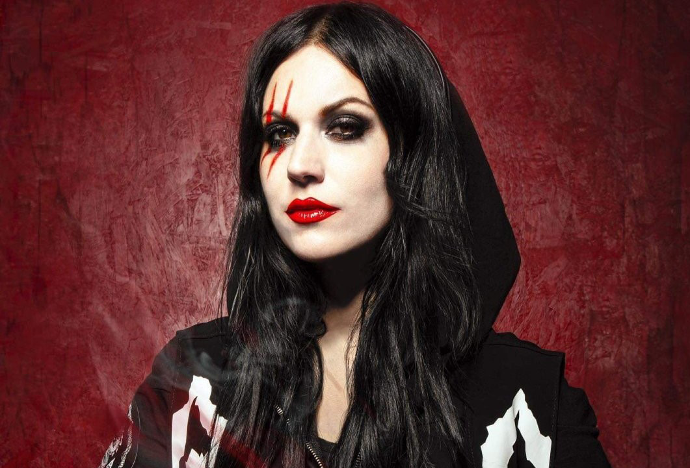
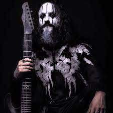
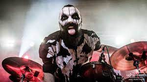

.jpg)
Lacuna Coil es una banda italiana de metal gótico formado en Milán, Lombardía, en 1994. Antiguamente fueron conocidos como Sleep of Right y Ethereal. De acuerdo a la banda, esta ha sido influenciada por grupos como Paradise Lost, My Dying Bride, Tiamat, Anathema, Septic Flesh, Black Sabbath, Type O Negative, Sentenced, Depeche Mode, In Flames o Amorphis, entre otros.
Lacuna Coil ha participado en los más grandes festivales de metal en todo el mundo, incluyendo Ozzfest, Bloodstock Open Air, Wacken Open Air, y en el Loudpark Festival en Japón.
Actualmente son considerados como una de las bandas de heavy metal más influyentes en Italia, así como una de las bandas italianas con mayor éxito en el extranjero y de las más influyentes en el metal gótico.
Integrantes

Cristina Scabbia
Cristina Adriana Chiara Scabbia (Milán, 6 de junio de 1972) es una cantante italiana conocida por ser una de los dos vocalistas de la banda de metal gótico ... Nacionalidad: Italiana Tipo de voz: Contralto Instrumento: Voz Años activa: 1991-presente

Diego Cavallotti
Guitarrista (2016–present)
Andrea Ferro
...
Maki
...

Richard Meiz
...